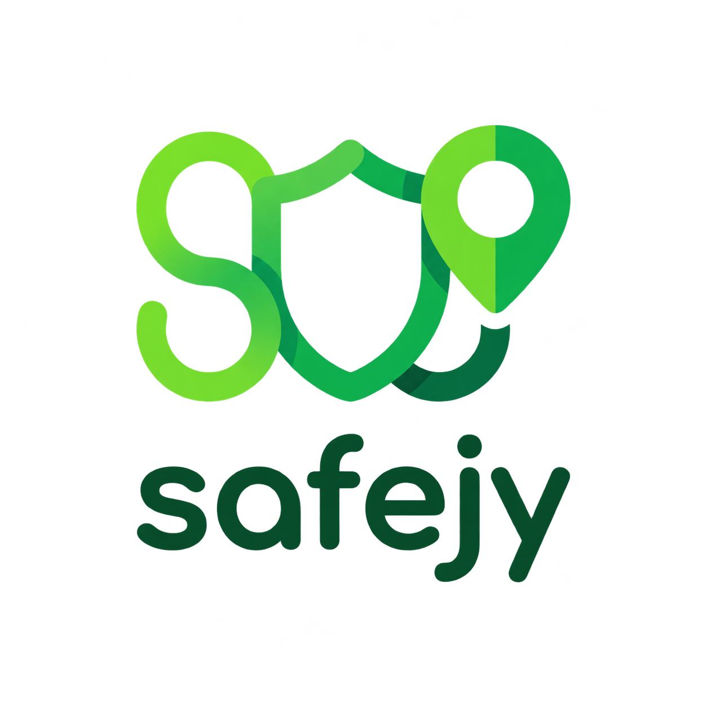
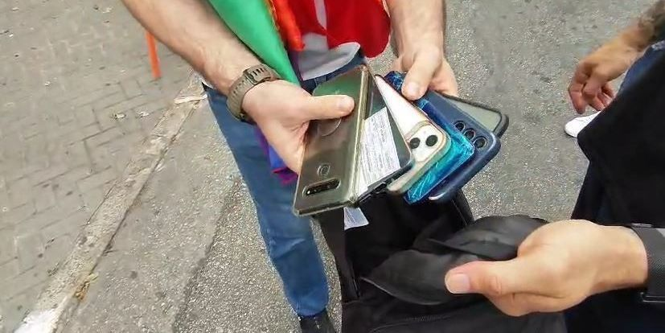
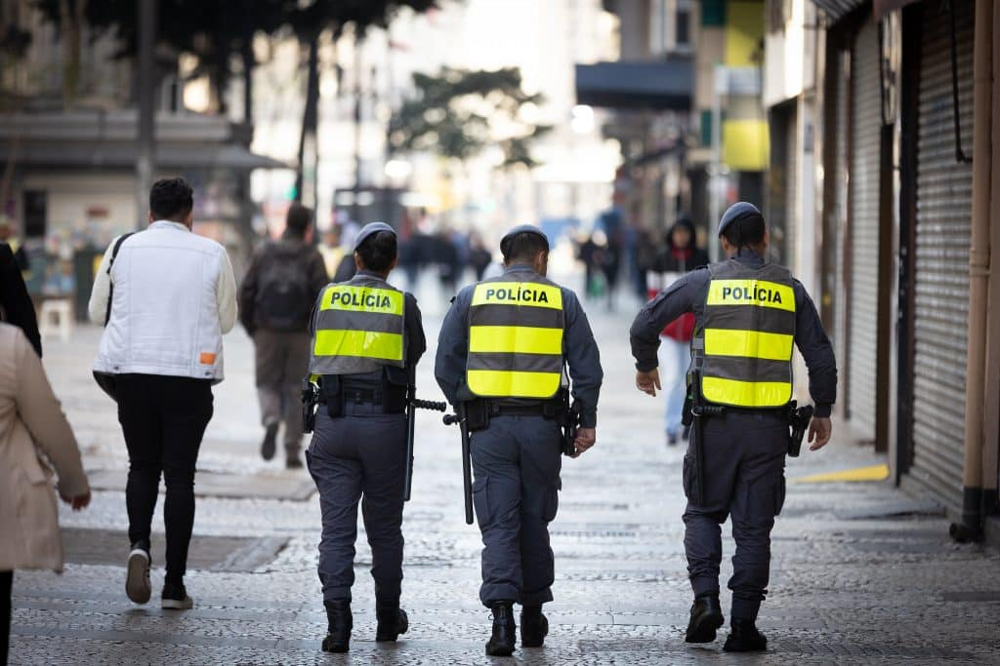

01
Informe seu trajeto.
Indique a origem e o destino em São Paulo.

safejy+SEGURANÇA NO SEU TRAJETO
Um app em desenvolvimento para mostrar se sua rota em São Paulo passa por áreas de risco.
Este trajeto passa por uma área de risco.
Exemplo ilustrativo. Não representa o risco real das ruas.
01 / NOSSO PROPÓSITO
Para ajudar quem não conhece São Paulo a identificar riscos no trajeto antes de sair.
Notícias e estudos que mostram o problema.

A FECAP analisou registros de roubos e furtos de celulares em 2025.
Explorar o estudo ↗
Segundo a SSP, os registros ocorreram no estado entre janeiro e abril de 2026, mesmo com a queda nas ocorrências.
Ler matéria original ↗Fontes com data e link para a publicação original. As notícias contextualizam o problema; o mapa usa dados fictícios.
02 / A NOSSA PROPOSTA
A proposta é informar se o trajeto escolhido passa por uma área de risco.
Indique a origem e o destino em São Paulo.
As zonas em vermelho destacariam os trechos que exigem atenção.
Receba uma indicação de segurança para a rota escolhida.
03 / PARA QUEM
Informação para visitantes e profissionais que passam por lugares novos.
Quem vem de outra cidade e quer planejar os passeios.
TURISMO & DESCOBERTAQuem precisa chegar a reuniões, eventos ou empresas em regiões desconhecidas.
TRABALHO & ROTINAMotoristas de aplicativo e profissionais que viajam para São Paulo.
MOBILIDADE & VIAGENS04 / PRÓXIMOS PASSOS
A SAFEJY quer ajudar quem chega a São Paulo a conhecer os riscos da rota antes da viagem.
Apresentar o protótipo e ouvir turistas e motoristas.
Definir fontes de dados, critérios de risco e avaliação das rotas.
Projeto acadêmico. Nenhuma rota garante ausência de risco.